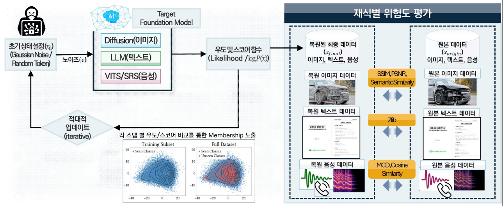
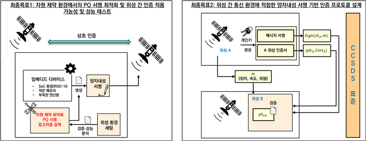
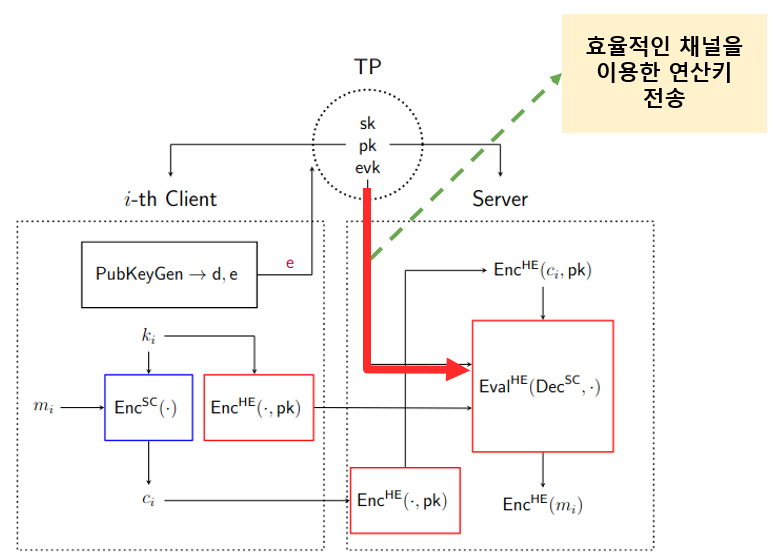

Jeonbuk National University
We are the Defense & Advanced Security (DAS) Lab at Jeonbuk National University with Prof. Joon Soo Yoo. Our research pursuits are situated under the critical intersection of next-generation defense and advanced cybersecurity, with a particular emphasis on investigating the security and privacy of autonomous intelligence across AI, space, and cryptographic domains.
We conduct research on advanced security, focusing on AI Security, Space Security, and Post-Quantum Cryptography (PQC). Furthermore, our lab is dedicated to exploring a wide range of defense-related research topics.



Interested Interns, M.S., and Ph.D. students should contact us to pioneer advanced security and defense technologies.
Please contact Prof. Joon Soo Yoo via email: joonsooyoo@jbnu.ac.kr